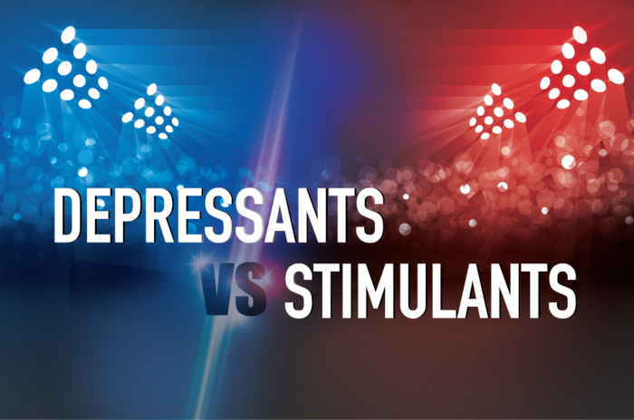

Many psychoactive drugs exist; some are legal and others are illegal. Forensic toxicologists analyze psychoactive drugs that are most often illegal. Illegal psychoactive drugs are of several types, each having its unique effects upon the body. Two general categories of psychoactive drugs are depressants and stimulants.
